来源：https://k874t2qh8w.feishu.cn/docx/UKEDdsTPZodQNnx17kpcEJcen7g
大家好，我是辰风，今天跟大家分享一个非常“暴力”的流量主起号方法——小绿书起号 + 转型爆款，适用于民生，养老，社会热点相关赛道。
我自己是亲身实测过的，效果确实惊人，尤其是在流量主这条赛道，掌握这个方法，你真的能在很短时间内看到钱进账。
不过这种方法，比较适合成熟的，有提示词支持的矩阵大佬，个人号作战可能小有成效。我主要分享的内容就是关于平台规则的认识，小绿书起号办法，以及具体实操经验中踩的坑和我的方法论。
我们当时投入了几十个账号，变现没能达到预期，但是方法论的确落地可行，也有单条几千的收益数据，跑了几十万的爆款。
以下数据为5月份，6月份左右的测试数据，最新的账号对标和这类型是否可以玩，请继续往下：
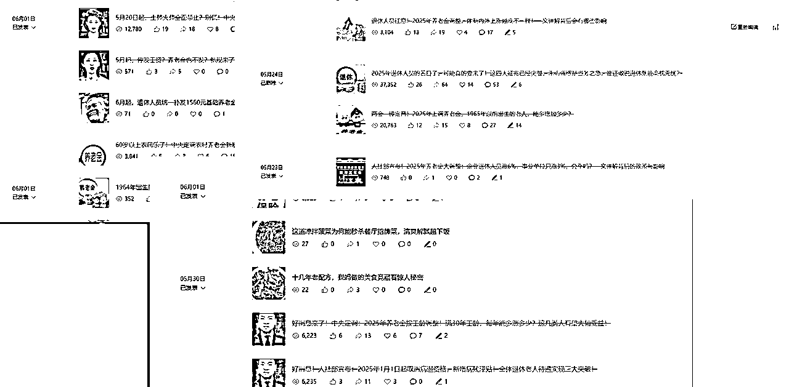
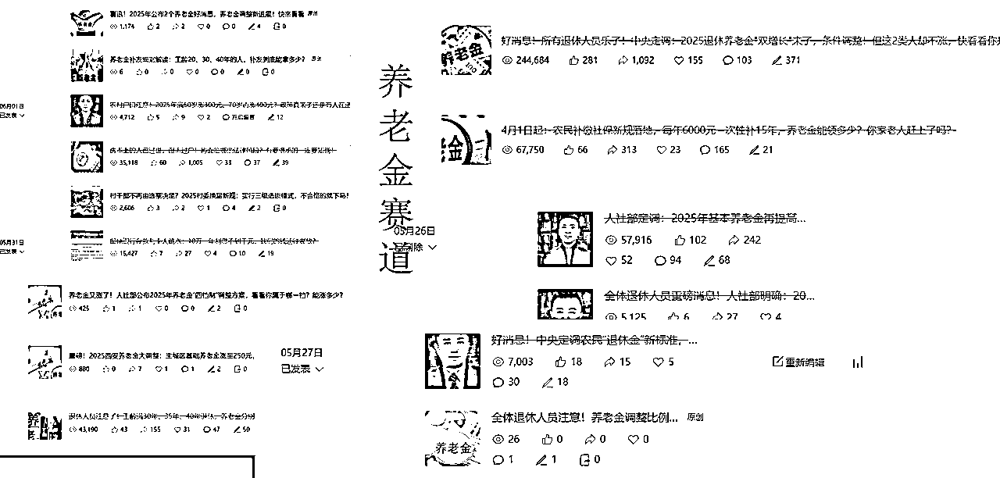
刚开始做流量主号时，我没有急着发自己领域的内容，而是先用“小绿书”的方式养号——每天一篇，连发 5-7天。
什么是小绿书？简单说，就是偏生活化、轻量化、带点分享性质的内容，比如美食、旅游、穿搭……这些题材读者接受度高、互动率好。
测试期间，我们甚至跑了上万，甚至是十万加的养号文章。
放一个最近测试的数据图：
它们可以快速为公众号积累基础的阅读量和粉丝关注，尤其是在公众号的流量机制中，平台对于刚建立的账号有一个权重积累期。
通过发“小绿书”，可以帮助你的账号快速通过这个积累期，让系统对你的账号产生足够的信任。
通常情况下，这些内容的定位和后期长文章的主题并不需要一致。可以尝试一些简单且能迅速引起关注的内容，如文物、美甲、绿植、宠物等。
等到这几篇小绿书内容发布完了，基本上账号的初期积累已经差不多，这时候再发布自己要做的流量主爆款领域的内容，效果会好很多。毕竟平台已经开始推送你了，粉丝量的增长会比你预期的要快。
个人经验：
做过这个方法的人应该都知道，刚开始做公众号，最忌讳的是无头无脑地发内容。想要获取平台流量的青睐，积累权重非常关键。
而“小绿书”的作用，就是帮助你在早期阶段平稳过渡，积累第一波曝光度和活跃度。也有新手保护期那个意思。
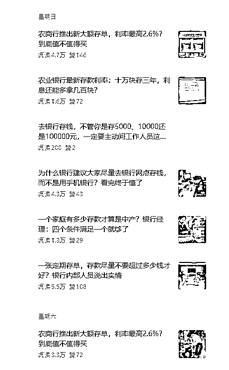
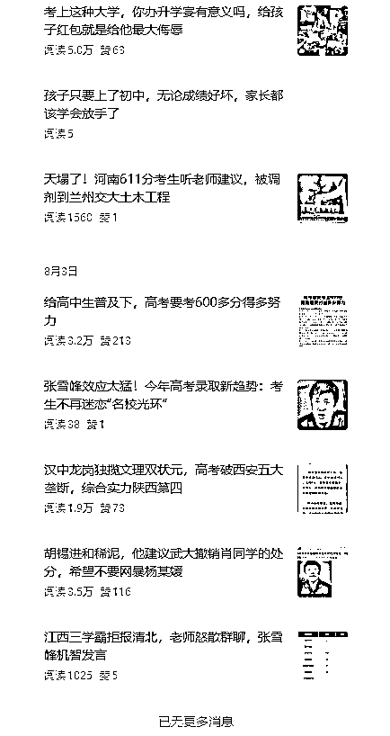
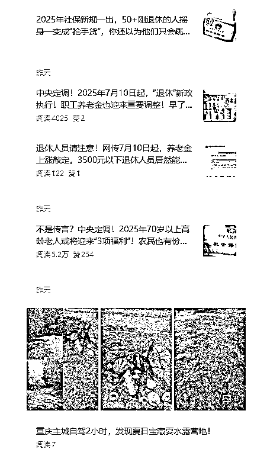
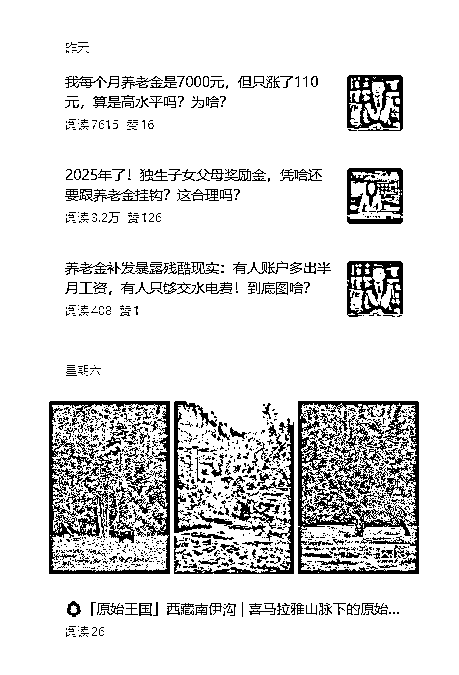
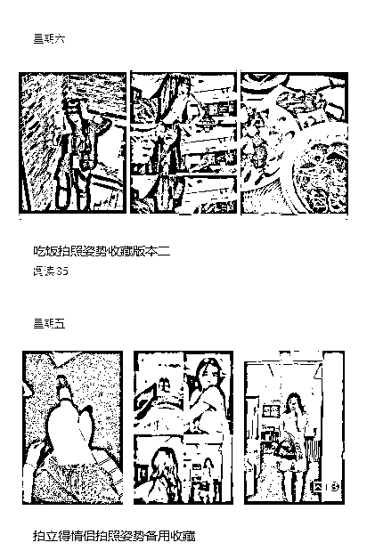
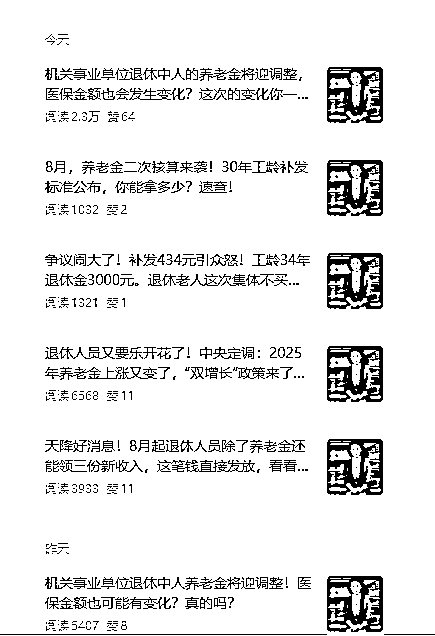
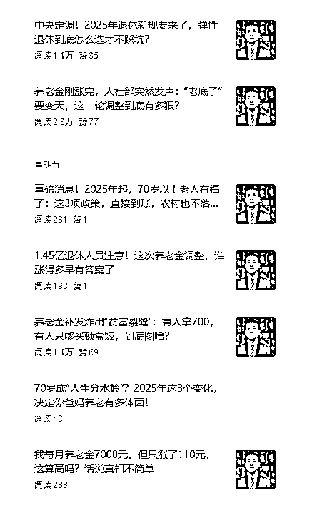
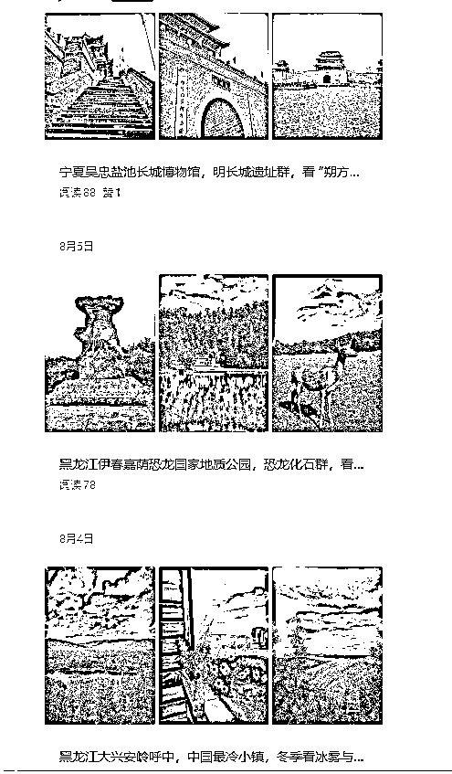
内容选择
在刚开始建立公众号时，可以先发布一些较为轻松和易于引起兴趣的内容，比如美甲、文物、宠物等领域的“小绿书”。
这些领域的内容相对容易吸引用户关注，同时不需要对后期的内容定位做过多限制。
频率与时间安排
为了快速提升账号权重，可以连续发布小绿书内容，建议保持至少5-7篇（每天一篇），如果没有数据了，可以再次发布小绿书来拉高账号的权重。
注意： 在发布时不宜开启群发通知，时间错开发布，这样不会让账号显得过于“激进”，也有利于防止平台过度限制流量。
内容优化
前期养号时长
前期起号的时间可以根据情况选择，一般建议5-7天左右。如果情况允许，也可以压缩到3-5天快速完成初期积累，然后快速转型做长文章。
很多人担心转型会掉粉，其实流量主号本身对粉丝质量没那么依赖。只要你的内容足够吸引人，爆款就能带来流量，广告收益自然就会跟着来。
我当时也有些犹豫，觉得一开始做的内容跟后面要做的流量主领域并不一致，可能会掉粉。
事实证明，转型后，流量并没有受到太大影响，反而因为内容的精准化和专业化，吸引了更多目标粉丝。
一开始转型到自己熟悉的领域后，一上来就遇到一篇阅读破 10 万+，单篇流量主收益直接 500+，那一刻我真切地感受到什么叫做“流量红利”。
这篇文章爆了之后，带来了大量的读者和粉丝，系统对我的账号也开始更高频地推荐，效果自然是立竿见影的。
个人经验：
在转型的过程中，不要过于担心掉粉，流量主赚的就是一波收益的钱，死号了就注销重开，进入下一批次账号。
必须得说，AI在做流量主号的时候，真的是个神器。我们在一些信息想要搜集的时候就可以使用AI来进行检索，调用数据库。
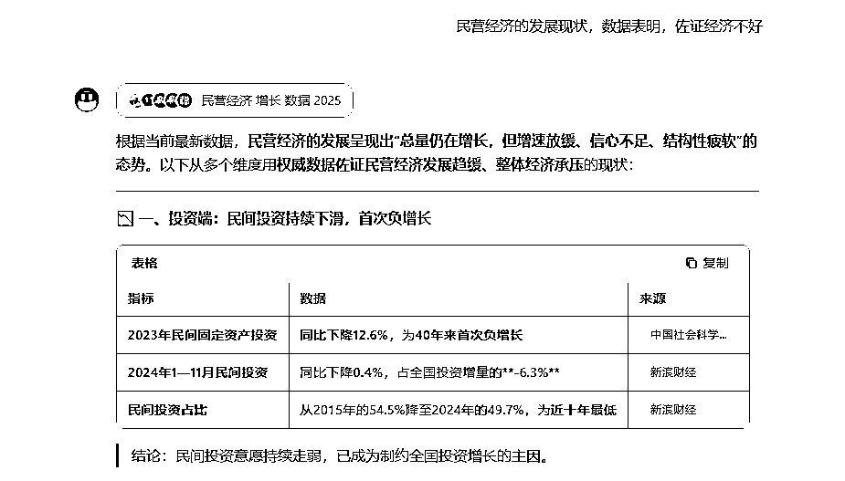
尤其在写作上，AI能帮你提高效率，解决一大堆创作上的难题，既省时又省力。
在写的时候，也可以通过他，来帮我们完成基础的内容框架或者基础信息的一个收集和调用，然后再把它跟我们对标的文章的素材打包结合，或者是做成知识库的形式，再依据提示词来进行内容创作写稿。
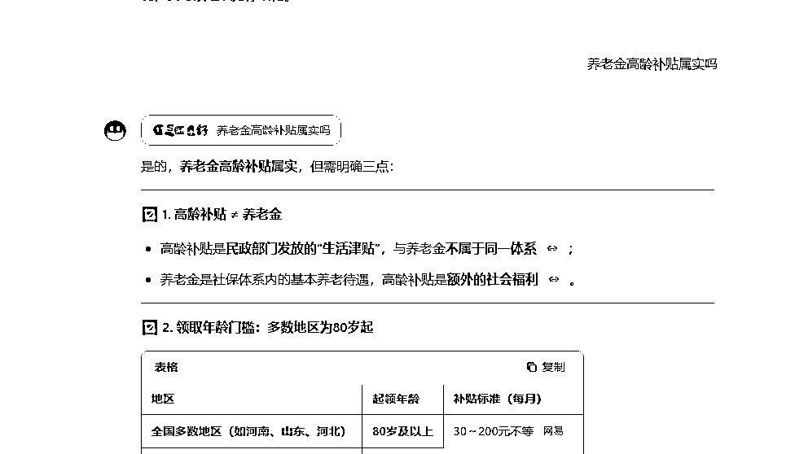
生成出来后，我还会查查重复率，尽量把相似度压到20%以下，这样平台收录就更稳定，发出去也能正常跑量。
这方法效率超高，尤其是对做矩阵的朋友来说，完全可以批量生产内容——几天时间就能搞出一大波爆款。
但要注意，虽然AI能大大提高效率，但生成的内容质量还是得人工修正一下，不然很容易出现“千篇一律”的问题，平台一看就知道是低质量内容。
这类型号最适合矩阵玩家的原因很简单：流量足够大，AI管束没那么严格，容易复制。
小绿书发布可以通过自动化工具进行批量采集，然后批量发布，省时省力。接下来长文章的创作，基本也是通过自动化写稿和排版来实现。
这种打法就是一波流——干几天，赚几千。你通过小绿书起号，利用AI提高内容输出效率，做到快速积累粉丝，流量也就跟着上来了。
尤其对于矩阵玩家来说，这种方法的收益会被放大。
例如，如果你同时操作5个公众号账号，就能通过一次爆款内容迅速让多个账号的流量一起飙升。
但要注意，这种方法的核心是快速变现，适合那些已经有一定基础的自媒体人。对于初学者来说，可能需要一定时间来适应和调整。
个人经验：
我在运营多个账号时，常常利用这种方法进行流量分发。
在短期内，能够通过批量操作迅速积累粉丝，并通过内容转化实现流量变现。矩阵操作并非一蹴而就，但一旦摸索出合适的节奏，效果是显著的。
做公众号流量主，很多人都会卡在“起号”和“内容”两个关键节点上。我总结了一下自己的一些经验和思考，希望能帮助大家避免一些常见的坑，快速上手流量主。
运营公众号时，最关键的一点就是要保证内容质量和选题。阅读量，转发互动都是很好的参考指标。
很多人觉得，长文章一发，流量就会自动涌入，但实际上，如果你的内容不能吸引到用户，长文章的高曝光和互动率不会持续。
如果你的内容没有价值，就容易导致号没有数据，陷入死号的状态。
而流量主号本身，虽然平台会给一定的流量支持，但用户是否感兴趣始终是最重要的。内容质量永远是核心，只有内容够好，流量才能稳定，收入才会稳步提升。
AI生成内容虽说方便，但它并不是万能的。平台依然会对内容进行审核，确保文章符合其标准。
所以，不要指望AI写出来的文章就万事大吉了。
为了确保内容通过审核，必须多测试几个提示词模板。
每次调整提示词时，要保证生成的内容与之前的文章不重复，避免平台判定内容过于模板化或低质量。
对于ai使用这块，一定要有辨别能力，能够权衡原创和ai内容的区分，用没用ai不重要，重要的是有没有信息增量的变化，以及内容是不是来来回回都是那些。
那么怎么获取到更多素材，提高内容丰富度，避免千篇一律，除了换一种表述之外还有什么办法，就值得我们思考下了。
选题是做好公众号的关键之一。如果你想要流量，就需要对标爆款内容。
对标公众号和头条的热门话题，找出那些有潜力引发讨论的选题来写。
但是，一定要记住，写完的内容一定要进行消息核对，确保内容一定的真实性。
虚假的内容不仅会影响读者的信任，还会导致账号封禁，重要的是会没钱。民生领域是高敏感的话题，流量跑起来之后，要及时关注，感觉风头不对就要及时删除。
对于AI生成的内容，要避免框架结构过于固定或重复。
尤其是长时间的内容创作中，必须不断打磨自己的内容框架和结构，做到每篇文章有独特性。
避免平台检测到你的内容是套用了模板的文章。如果一篇篇文章都框架趋同，读者也会感到乏味，平台也很可能把你的内容定为低质量内容。
内容创新的核心在于，不仅要有创意的选题，更要有独到的结构和角度。
虽然我们经常依赖朱雀查重来检测文章相似度，但它毕竟只能作为参考工具。
查重结果并不能完全判定内容的质量，最重要的是内容是否具有原创性和价值。
许多文章在结构和视角上进行了一定的调整，就能脱离查重工具的检测，所以不要过于依赖查重工具。
查重仅仅是帮助我们发现相似内容，但真正能吸引用户的是内容的创新性、情感共鸣和深度。
某些话题之所以能持续爆发，是因为它们具备巨大的流量潜力，尤其是那些与社会热点、娱乐话题相关的内容。通过反复写类似话题来获取更多的曝光和流量是可行的，但需要注意，内容要保持一定的创新性和差异性，不能总是重复相同的角度，否则会让用户产生疲劳感。
热点内容有时可能会在短期内带来大量流量，但如何保持话题的新鲜感，让内容持续爆发，是每个创作者必须思考的。
每个赛道的特点都不同，因此在起号的过程中要灵活调整策略。
比如做娱乐明星类内容的公众号，可以直接用长文章做爆款；而做社会问题或高质量原创的公众号，则可以从小绿书开始积累粉丝和曝光。
初期的流量积累不仅取决于你所发布的内容，还取决于你选择的策略和起号方式。只有根据赛道的不同特点进行灵活调整，才能有效提升账号的曝光率和吸引力。
掌握平台的推荐机制非常重要。在公众号的起号阶段，平台会根据你的互动情况、阅读量、分享率等判断是否推送给更多用户。
频繁发布高质量的内容能帮助你在早期积累流量，而这段时间非常关键，内容的质量和数量要保持平衡。通过结合AI批量生成内容，在短时间内完成内容积累，迅速获得平台推荐的机会。
很多创作者会选择热门领域来创作，但对于流量主账号来说，深入细分领域会有更好的效果。
通过AI进行内容创作时，选择一个具体的子领域，进行精准定位，创作长篇文章，可以更好地吸引目标用户的关注。以民生为例：写养老金退休政策，社会保障，丧葬补贴，医疗补贴，生育补贴，这些都属于细分的方向。
长篇内容能让你更深入地挖掘话题，也能提升文章的价值，而不是泛泛而谈的流水账式内容。
最后，感谢你看到这里，见帖欢喜，一起生财有术。